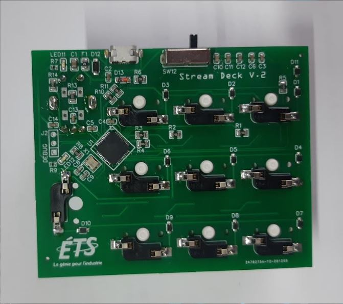
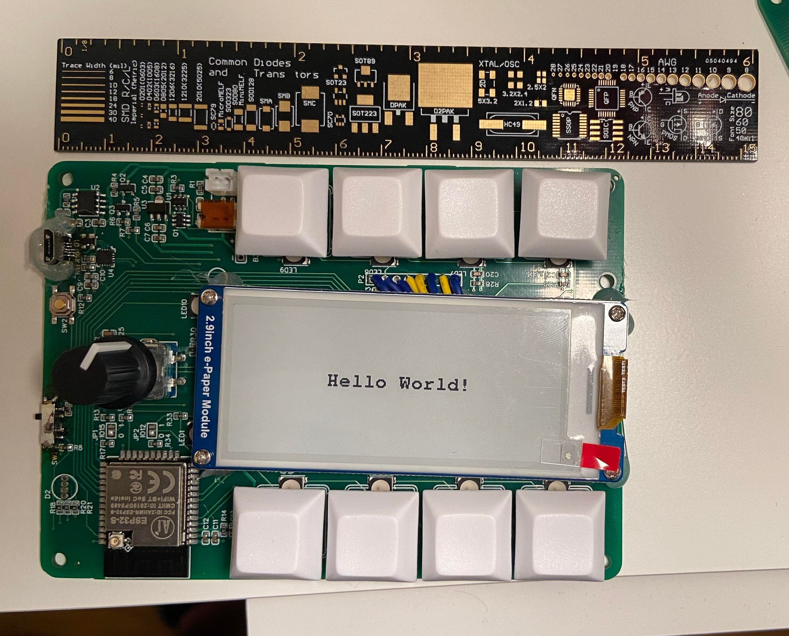

À propos du projet
Description
Le projet a commencé comme un contrat pour un enseignant qui souhaitait un clavier macro pour l'aider à animer ses cours à distance, et s'est finalement transformé en projet de fin d'études. Trois versions de ce projet ont été créées et 30 claviers de la première version ont été fabriqués et distribués à des enseignants de l'ÉTS à Montréal.
Mon rôle
Pour ce projet, nous étions deux personnes. Mon rôle était de concevoir le circuit, de sélectionner toutes les pièces nécessaires au projet et d'effectuer la soudure.
Pour ce projet, j'ai dû intégrer un connecteur USB ainsi qu'une matrice pour les interrupteurs et les DEL.
Pour la deuxième version du clavier, j'étais responsable de réduire le coût de fabrication de chaque unité.
Pour la troisième version, nous avons ajouté un écran et une fonctionnalité de connectivité Bluetooth. Cette modification nécessitait l'ajout d'une batterie et d'un circuit de recharge LiPo sur la carte.
J'ai également contribué au développement du firmware de la dernière version.
Technologies
- Langage
- C/C++
- Logiciels & Ressources
- EasyEDA, Arduino IDE
Photos & Vidéos


